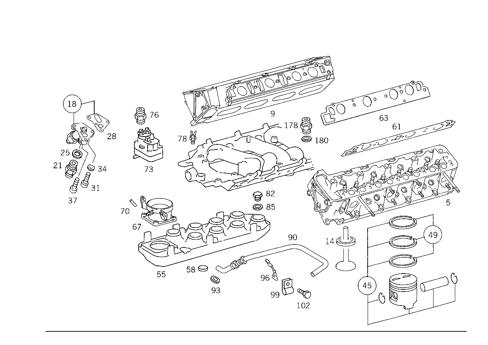

| № | Артикул | Название | Кол. | Примечание | Ограничение |
|---|---|---|---|---|---|
| 5 | A 117 010 09 21 | ГОЛОВКА БЛОКА ЦИЛИНДРОВ | - | Z 12.350/03, Z 12.350/04, Z 12.350/05, Z 12.350/06 | |
| 5 | A 117 010 33 21 | ГОЛОВКА БЛОКА ЦИЛИНДРОВ | - | Z 12.350/03, Z 12.350/04, Z 12.350/05, Z 12.350/06 | |
| 5 | A 117 010 84 21 | ГОЛОВКА БЛОКА ЦИЛИНДРОВ | 1 | СЛЕВА Z 12.350/03, Z 12.350/04, Z 12.350/05, Z 12.350/06 | |
| 9 | A 117 010 11 21 | ГОЛОВКА БЛОКА ЦИЛИНДРОВ | - | Z 12.350/03, Z 12.350/04, Z 12.350/05, Z 12.350/06 | |
| 9 | A 117 010 35 21 | ГОЛОВКА БЛОКА ЦИЛИНДРОВ | - | Z 12.350/03, Z 12.350/04, Z 12.350/05, Z 12.350/06 [037] ИСПОЛЬЗОВАТЬ СТАРЫЙ НОМЕР ДЕТАЛИ ДО ДВИГАТЕЛЯ 117.985 037711 EXCEPT FOR 036477,036478,036539,036592,036649 117.986 040881 | |
| 9 | A 117 010 64 21 | ГОЛОВКА БЛОКА ЦИЛИНДРОВ | - | Z 12.350/03, Z 12.350/04, Z 12.350/05, Z 12.350/06 | |
| 9 | A 117 010 86 21 | ГОЛОВКА БЛОКА ЦИЛИНДРОВ | 1 | СПРАВА Z 12.350/03, Z 12.350/04, Z 12.350/05, Z 12.350/06 | |
| 14 | A 116 053 04 32 | - КОЛЬЦО СЕДЛА КЛАПАНА | - | Z 12.350/03, Z 12.350/04, Z 12.350/05, Z 12.350/06 | |
| 14 | A 117 053 02 32 | - КОЛЬЦО СЕДЛА КЛАПАНА | - | Z 12.350/03, Z 12.350/04, Z 12.350/05, Z 12.350/06 [035] СМ. СТАНДАРТ. ИСПОЛН. | |
| 14 | A 116 053 05 32 | - КОЛЬЦО СЕДЛА КЛАПАНА | - | Z 12.350/03, Z 12.350/04, Z 12.350/05, Z 12.350/06 | |
| 14 | A 117 053 03 32 | - КОЛЬЦО СЕДЛА КЛАПАНА | - | Z 12.350/03, Z 12.350/04, Z 12.350/05, Z 12.350/06 [035] СМ. СТАНДАРТ. ИСПОЛН. | |
| 18 | A 117 050 05 11 | НАТЯЖИТЕЛЬ ЦЕПИ | - | Z 12.350/03, Z 12.350/04, Z 12.350/05, Z 12.350/06 | |
| 18 | A 117 050 07 11 | НАТЯЖИТЕЛЬ ЦЕПИ | - | Z 12.350/03, Z 12.350/04, Z 12.350/05, Z 12.350/06 | |
| 18 | A 117 050 10 11 | Комплект натяжителя цепи | 1 | ОБЪЁМ ПОСТАВКИ Z 12.350/03, Z 12.350/04, Z 12.350/05, Z 12.350/06 | |
| 21 | N 915013 016002 | - Штуцер | 1 | Z 12.350/03, Z 12.350/04, Z 12.350/05, Z 12.350/06 | |
| 25 | A 094 990 95 07 | - Уплотнительное кольцо | 1 | Z 12.350/03, Z 12.350/04, Z 12.350/05, Z 12.350/06 | |
| 28 | A 117 052 00 80 | ПРОКЛАДКА УПЛОТНИТЕЛЬНАЯ | - | Z 12.350/03, Z 12.350/04, Z 12.350/05, Z 12.350/06 | |
| 28 | A 117 052 04 80 | Уплотнение | 1 | Z 12.350/03, Z 12.350/04, Z 12.350/05, Z 12.350/06 | |
| 31 | N 000912 008098 | Цилиндрич. винт | - | Z 12.350/03, Z 12.350/04, Z 12.350/05, Z 12.350/06 | |
| 31 | N 000912 008204 | Цилиндрич. винт | 2 | M8X35 Z 12.350/03, Z 12.350/04, Z 12.350/05, Z 12.350/06 | |
| 34 | N 000137 008204 | Пружинная шайба | - | Z 12.350/03, Z 12.350/04, Z 12.350/05, Z 12.350/06 | |
| 34 | N 000137 008212 | Пружинная шайба | 1 | Z 12.350/03, Z 12.350/04, Z 12.350/05, Z 12.350/06 | |
| 37 | N 000912 008111 | Цилиндрич. винт | - | Z 12.350/03, Z 12.350/04, Z 12.350/05, Z 12.350/06 | |
| 37 | N 000000 000190 | Цилиндрич. винт | 1 | M8X25 Z 12.350/03, Z 12.350/04, Z 12.350/05, Z 12.350/06 | |
| 45 | A 117 030 34 17 | ПОРШЕНЬ | 8 | НОРМАЛЬНО 92.00 Z 12.350/03, Z 12.350/04, Z 12.350/05, Z 12.350/06 | |
| 45 | A 117 030 35 17 | ПОРШЕНЬ | 8 | РЕМОНТНАЯ ГРУППА I 92.50 Z 12.350/03, Z 12.350/04, Z 12.350/05, Z 12.350/06 | |
| 45 | A 117 030 36 17 | ПОРШЕНЬ | 8 | РЕМОНТНАЯ ГРУППА II 93.00 Z 12.350/03, Z 12.350/04, Z 12.350/05, Z 12.350/06 | |
| 49 | A 003 586 94 03 | - РЕМКОМПЛЕКТ | - | Z 12.350/03, Z 12.350/04, Z 12.350/05, Z 12.350/06 | |
| 49 | A 001 030 07 24 | - КОЛЬЦО ПОРШНЕВОЕ | 8 | НОРМАЛЬНО Z 12.350/03, Z 12.350/04, Z 12.350/05, Z 12.350/06 | |
| 49 | A 003 586 95 03 | - РЕМКОМПЛЕКТ | - | Z 12.350/03, Z 12.350/04, Z 12.350/05, Z 12.350/06 | |
| 49 | A 001 030 08 24 | - КОЛЬЦО ПОРШНЕВОЕ | 8 | РЕМОНТНАЯ ГРУППА I Z 12.350/03, Z 12.350/04, Z 12.350/05, Z 12.350/06 [402] БОЛЬШЕ НЕ ПОСТАВЛЯЕТСЯ | |
| 49 | A 003 586 96 03 | - РЕМКОМПЛЕКТ | - | Z 12.350/03, Z 12.350/04, Z 12.350/05, Z 12.350/06 | |
| 49 | A 000 030 99 24 | - КОЛЬЦО ПОРШНЕВОЕ | 8 | РЕМОНТНАЯ ГРУППА II Z 12.350/03, Z 12.350/04, Z 12.350/05, Z 12.350/06 [402] БОЛЬШЕ НЕ ПОСТАВЛЯЕТСЯ | |
| 55 | A 117 140 31 01 | ВПУСКНОЙ КОЛЛЕКТОР | 1 | Z 12.350/03, Z 12.350/04, Z 12.350/05, Z 12.350/06 | |
| 58 | N 000443 032003 | - Запорная крышка | 1 | Z 12.350/03, Z 12.350/04, Z 12.350/05, Z 12.350/06 | |
| 61 | A 117 141 05 80 | ПРОКЛАДКА УПЛОТНИТЕЛЬНАЯ | - | Z 12.350/03, Z 12.350/04, Z 12.350/05, Z 12.350/06 | |
| 61 | A 117 141 28 80 | ПРОКЛАДКА УПЛОТНИТЕЛЬНАЯ | 1 | СЛЕВА Z 12.350/03, Z 12.350/04, Z 12.350/05, Z 12.350/06 | |
| 63 | A 117 141 06 80 | ПРОКЛАДКА УПЛОТНИТЕЛЬНАЯ | - | Z 12.350/03, Z 12.350/04, Z 12.350/05, Z 12.350/06 | |
| 63 | A 117 141 29 80 | ПРОКЛАДКА УПЛОТНИТЕЛЬНАЯ | 1 | СПРАВА Z 12.350/03, Z 12.350/04, Z 12.350/05, Z 12.350/06 | |
| 67 | A 001 140 13 53 | КОРПУС ЗАСЛОНКИ | 1 | Z 12.350/03, Z 12.350/04, Z 12.350/05, Z 12.350/06 [402] БОЛЬШЕ НЕ ПОСТАВЛЯЕТСЯ | |
| 70 | A 000 987 11 45 | Защитный колпачок | 1 | Z 12.350/03, Z 12.350/04 | |
| 73 | A 000 070 05 62 | РЕГУЛЯТОР | 1 | РЕГУЛЯТ.ГОРЯЧ.ПОТОКА Z 12.350/03, Z 12.350/04, Z 12.350/05, Z 12.350/06 [402] БОЛЬШЕ НЕ ПОСТАВЛЯЕТСЯ | |
| 76 | A 000 074 48 86 | - РЕЗЬБ. ШТУЦЕР | - | Z 12.350/03, Z 12.350/04, Z 12.350/05, Z 12.350/06 | |
| 76 | A 000 074 55 86 | - РЕЗЬБ. ШТУЦЕР | - | Z 12.350/03, Z 12.350/04, Z 12.350/05, Z 12.350/06 | |
| 76 | A 102 074 02 86 | - РЕЗЬБ. ШТУЦЕР | 1 | МЕМБРАН.ДЕМПФЕР К РЕГУЛЯТ.ГОРЯЧ.ПОТОКА Z 12.350/03, Z 12.350/04, Z 12.350/05, Z 12.350/06 | |
| 78 | A 000 140 34 60 | Клапан | 1 | THERMOVALVE, OPENING AT 17 DEGREES Z 12.350/03, Z 12.350/04, Z 12.350/05, Z 12.350/06 | |
| 78 | A 000 140 33 60 | КЛАПАН | 1 | THERMOVALVE, OPENING AT 40 DEGREES Z 12.350/03, Z 12.350/04, Z 12.350/05, Z 12.350/06 | |
| 82 | N 007604 012102 | Резьбовая пробка | 1 | Z 12.350/03, Z 12.350/04 | |
| 82 | N 007604 012105 | Резьбовая пробка | 1 | M12X1,5 Z 12.350/03, Z 12.350/04 | |
| 85 | N 007603 012110 | Уплотнительное кольцо | 1 | Z 12.350/03, Z 12.350/04 | |
| 90 | A 117 140 08 12 | ТРУБОПРОВОД | 1 | РЕЦИРКУЛЯЦИЯ ОГ Z 12.350/03, Z 12.350/04, Z 12.350/05, Z 12.350/06 | |
| 93 | A 094 990 95 07 | Уплотнительное кольцо | 1 | EXHAUST GAS RECIRCULATION TO INTAKE MANIFOLD UPPER PART Z 12.350/03, Z 12.350/04, Z 12.350/05, Z 12.350/06 | |
| 96 | A 117 141 08 40 | ДЕРЖАТЕЛЬ | 1 | EXHAUST GAS RECIRCULATION TO INTAKE MANIFOLD UPPER PART Z 12.350/03, Z 12.350/04, Z 12.350/05, Z 12.350/06 [402] БОЛЬШЕ НЕ ПОСТАВЛЯЕТСЯ | |
| 99 | A 117 995 00 01 | ХОМУТ | - | Z 12.350/03, Z 12.350/04, Z 12.350/05, Z 12.350/06 | |
| 99 | A 941 995 03 01 | хомут | 1 | EXHAUST GAS RECIRCULATION TO INTAKE MANIFOLD UPPER PART Z 12.350/03, Z 12.350/04, Z 12.350/05, Z 12.350/06 | |
| 102 | N 000933 008123 | Винт | - | Z 12.350/03, Z 12.350/04, Z 12.350/05, Z 12.350/06 | |
| 102 | N 304017 008008 | Винт с 6-гранной головкой | 1 | EXHAUST GAS RECIRCULATION TO INTAKE MANIFOLD UPPER PART Z 12.350/03, Z 12.350/04, Z 12.350/05, Z 12.350/06 | |
| 105 | A 000 990 68 54 | Накидная гайка | 5 | Z 12.350/03, Z 12.350/04 | |
| 105 | A 000 990 68 54 | Накидная гайка | 3 | Z 12.350/05, Z 12.350/06 | |
| 108 | A 000 990 73 67 | Кольцо | 5 | Z 12.350/03, Z 12.350/04 | |
| 108 | A 000 990 73 67 | Кольцо | 3 | Z 12.350/05, Z 12.350/06 | |
| 115 | A 001 990 00 71 | УГЛОВОЙ ЭЛЕМЕНТ | 1 | Z 12.350/03, Z 12.350/04, Z 12.350/05, Z 12.350/06 [402] БОЛЬШЕ НЕ ПОСТАВЛЯЕТСЯ | |
| 118 | A 117 141 16 04 | ТРУБКА | 1 | Z 12.350/03, Z 12.350/04 [402] БОЛЬШЕ НЕ ПОСТАВЛЯЕТСЯ | |
| 144 | N 009021 006205 | Шайба | - | Z 12.350/03, Z 12.350/04 | |
| 144 | N 009021 006208 | Шайба | 1 | 6 MM Z 12.350/03, Z 12.350/04 | |
| 147 | N 000933 006102 | Винт | - | Z 12.350/03, Z 12.350/04 | |
| 147 | N 304017 006016 | Винт с 6-гранной головкой | 1 | M6X16 Z 12.350/03, Z 12.350/04 | |
| 150 | A 117 995 00 01 | ХОМУТ | - | Z 12.350/03, Z 12.350/04 | |
| 150 | A 941 995 03 01 | хомут | 1 | Z 12.350/03, Z 12.350/04 | |
| 154 | A 000 140 28 60 | КЛАПАН | 1 | РЕЦИРКУЛЯЦИЯ ОГ Z 12.350/03, Z 12.350/04 [402] БОЛЬШЕ НЕ ПОСТАВЛЯЕТСЯ | |
| 158 | A 110 141 24 04 | ТРУБКА | - | Z 12.350/03, Z 12.350/04 [006] ИСПОЛЬЗОВАТЬ СТАРЫЙ НОМЕР ДЕТАЛИ ДО ДВИГАТЕЛЯ 117.985 12/52,22/62 005687 117.986 12/52,22/62 006619 | |
| 158 | A 117 141 15 04 | ТРУБКА | 1 | КЛАПАН РЕЦИРКУЛ. ОГ К ВЫПУСКН. КОЛЛЕКТОРУ Z 12.350/03, Z 12.350/04 [402] БОЛЬШЕ НЕ ПОСТАВЛЯЕТСЯ | |
| 161 | A 117 141 09 40 | ДЕРЖАТЕЛЬ | 1 | Z 12.350/03, Z 12.350/04 | |
| 164 | A 117 995 00 01 | ХОМУТ | - | Z 12.350/03, Z 12.350/04 | |
| 164 | A 941 995 03 01 | хомут | 1 | Z 12.350/03, Z 12.350/04 | |
| 167 | N 000933 008123 | Винт | - | Z 12.350/03, Z 12.350/04 | |
| 167 | N 304017 008008 | Винт с 6-гранной головкой | 1 | Z 12.350/03, Z 12.350/04 | |
| 171 | A 117 141 12 04 | ТРУБКА | 1 | РЕЦИРКУЛЯЦИЯ ОГ НА КОЛЛЕКТОРЕ ОГ Z 12.350/05, Z 12.350/06 [402] БОЛЬШЕ НЕ ПОСТАВЛЯЕТСЯ | |
| 174 | A 117 995 00 01 | ХОМУТ | - | Z 12.350/05, Z 12.350/06 | |
| 174 | A 941 995 03 01 | хомут | 1 | РЕЦИРКУЛЯЦИЯ ОГ НА КОЛЛЕКТОРЕ ОГ Z 12.350/05, Z 12.350/06 | |
| 175 | A 117 995 00 35 | ХОМУТ | 1 | Z 12.350/05, Z 12.350/06 [402] БОЛЬШЕ НЕ ПОСТАВЛЯЕТСЯ | |
| 178 | A 110 997 16 72 | ШТУЦЕР | 1 | Z 12.350/05, Z 12.350/06 | |
| 180 | N 007603 012110 | Уплотнительное кольцо | 1 | Z 12.350/05, Z 12.350/06 | |
| 184 | A 000 140 29 60 | КЛАПАН | 1 | РЕЦИРКУЛЯЦИЯ ОГ Z 12.350/05, Z 12.350/06 | |
| 187 | A 117 142 00 80 | ПРОКЛАДКА УПЛОТНИТЕЛЬНАЯ | - | Z 12.350/05, Z 12.350/06 | |
| 187 | A 100 142 01 80 | ПРОКЛАДКА УПЛОТНИТЕЛЬНАЯ | - | Z 12.350/05, Z 12.350/06 | |
| 187 | A 104 142 04 80 | Уплотнительная прокладка | 1 | Z 12.350/05, Z 12.350/06 | |
| 190 | A 117 142 00 20 | ЭКРАН | 1 | Z 12.350/05, Z 12.350/06 | |
| 193 | A 117 142 01 80 | ПРОКЛАДКА УПЛОТНИТЕЛЬНАЯ | - | Z 12.350/05, Z 12.350/06 | |
| 193 | A 117 142 07 80 | ПРОКЛАДКА УПЛОТНИТЕЛЬНАЯ | 1 | Z 12.350/05, Z 12.350/06 | |
| 196 | N 000939 006049 | Винт | 1 | VALVE TO EXHAUST MANIFOLD Z 12.350/05, Z 12.350/06 | |
| 196 | N 000939 006048 | Винт | 1 | VALVE TO EXHAUST MANIFOLD Z 12.350/05, Z 12.350/06 | |
| 199 | N 000934 006018 | Гайка | 2 | VALVE TO EXHAUST MANIFOLD Z 12.350/05, Z 12.350/06 | |
| 204 | A 114 997 18 82 | ШЛАНГ | 1 | FROM INTAKE MANIFOLD TO DIAPHRAGM VALVE 170mm; 13.3X3 MM Z 12.350/05, Z 12.350/06 [404] ЗАКАЗЫВАТЬ ПОГОННЫМИ МЕТРАМИ | |
| 208 | A 001 997 41 90 | Кабельная стяжка | 2 | 7X100 MM Z 12.350/05, Z 12.350/06 | |
| 212 | A 000 470 00 93 | Мембранный клапан | 1 | MEMБРАНА Z 12.350/05, Z 12.350/06 | |
| 215 | N 000933 005058 | Винт | 1 | Z 12.350/05, Z 12.350/06 | |
| 220 | A 114 997 18 82 | ШЛАНГ | 1 | FROM DIAPHRAGM VALVE TO ACTIVATED CHARCOAL FILTER 1030 MM; 13.3X3 MM Z 12.350/05, Z 12.350/06 [404] ЗАКАЗЫВАТЬ ПОГОННЫМИ МЕТРАМИ | |
| 222 | N 916033 012100 | Хомут | 1 | Z 12.350/05, Z 12.350/06 | |
| 225 | A 000 140 16 60 | КЛАПАН | 1 | ПРОДУВКА Z 12.350/03, Z 12.350/04, Z 12.350/05, Z 12.350/06 | |
| 228 | A 117 140 01 40 | ДЕРЖАТЕЛЬ | 1 | Z 12.350/03, Z 12.350/04, Z 12.350/05, Z 12.350/06 | |
| 228 | A 117 140 03 40 | ДЕРЖАТЕЛЬ | 1 | Z 12.350/05, Z 12.350/06 [402] БОЛЬШЕ НЕ ПОСТАВЛЯЕТСЯ | |
| 230 | N 000933 006122 | Винт | - | Z 12.350/03, Z 12.350/04, Z 12.350/05, Z 12.350/06 | |
| 230 | N 304017 006034 | Винт с 6-гранной головкой | 2 | Z 12.350/03, Z 12.350/04, Z 12.350/05, Z 12.350/06 | |
| 233 | A 117 141 06 83 | ШЛАНГ | 1 | ВОЗДУШ.НАСОС К ОТКЛЮЧ.КЛАПАНУ Z 12.350/03, Z 12.350/04, Z 12.350/05, Z 12.350/06 [402] БОЛЬШЕ НЕ ПОСТАВЛЯЕТСЯ | |
| 236 | A 117 997 01 90 | Хомут для шланга | 2 | Z 12.350/03, Z 12.350/04, Z 12.350/05, Z 12.350/06 | |
| 240 | A 117 140 04 64 | ВОЗДУХОВОД | 1 | Z 12.350/03, Z 12.350/04, Z 12.350/05, Z 12.350/06 [402] БОЛЬШЕ НЕ ПОСТАВЛЯЕТСЯ | |
| 244 | N 915003 016201 | - Шариковая втулка | 1 | Z 12.350/03, Z 12.350/04, Z 12.350/05, Z 12.350/06 | |
| 248 | N 915001 016003 | - НАКИДНАЯ ГАЙКА | - | Z 12.350/03, Z 12.350/04, Z 12.350/05, Z 12.350/06 | |
| 248 | N 915017 018200 | - Гайка | 1 | Z 12.350/03, Z 12.350/04, Z 12.350/05, Z 12.350/06 | |
| 250 | A 000 140 01 60 | КЛАПАН | 1 | ОБРАТН. УДАР Z 12.350/03, Z 12.350/04, Z 12.350/05, Z 12.350/06 | |
| 250 | A 000 140 42 60 | КЛАПАН | 1 | ОБРАТН. УДАР Z 12.350/03, Z 12.350/04, Z 12.350/05, Z 12.350/06 | |
| 252 | A 117 141 07 83 | ШЛАНГ | 1 | FROM BLOW\-OFF VALVE TO CHECK VALVE Z 12.350/03, Z 12.350/04, Z 12.350/05, Z 12.350/06 [402] БОЛЬШЕ НЕ ПОСТАВЛЯЕТСЯ | |
| 254 | A 117 997 01 90 | Хомут для шланга | 2 | Z 12.350/03, Z 12.350/04, Z 12.350/05, Z 12.350/06 | |
| 256 | A 000 018 37 60 | ФИЛЬТР | - | Z 12.350/03, Z 12.350/04, Z 12.350/05, Z 12.350/06 | |
| 256 | A 000 018 41 60 | ФИЛЬТР | - | Z 12.350/03, Z 12.350/04, Z 12.350/05, Z 12.350/06 | |
| 256 | A 000 018 43 60 | ФИЛЬТР | 1 | Z 12.350/03, Z 12.350/04, Z 12.350/05, Z 12.350/06 | |
| 258 | A 117 141 05 83 | ШЛАНГ | 1 | FROM BLOW\-OFF VALVE TO FILTER Z 12.350/03, Z 12.350/04, Z 12.350/05, Z 12.350/06 | |
| 259 | A 117 997 01 90 | Хомут для шланга | 1 | AT BLOW\-OFF VALVE Z 12.350/03, Z 12.350/04, Z 12.350/05, Z 12.350/06 | |
| 260 | N 916026 020001 | Хомут | - | 20\-27 MM Z 12.350/03, Z 12.350/04, Z 12.350/05, Z 12.350/06 | |
| 260 | N 000000 000667 | Хомут | 1 | НА ФИЛЬТРЕ; 23\-30 MM Z 12.350/03, Z 12.350/04, Z 12.350/05, Z 12.350/06 | |
| 283 | A 117 142 04 40 | ДЕРЖАТЕЛЬ | - | Z 12.350/03, Z 12.350/04, Z 12.350/05, Z 12.350/06 [030] ИСПОЛЬЗОВАТЬ СТАРЫЙ НОМЕР ДЕТАЛИ ДО ДВИГАТЕЛЯ 117.985 048337, JAPAN 117.986 053396, JAPAN | |
| 283 | A 117 142 08 40 | ДЕРЖАТЕЛЬ | 1 | Z 12.350/03, Z 12.350/04, Z 12.350/05, Z 12.350/06 [402] БОЛЬШЕ НЕ ПОСТАВЛЯЕТСЯ | |
| 285 | N 000931 008207 | Винт | - | Z 12.350/03, Z 12.350/04, Z 12.350/05, Z 12.350/06 | |
| 285 | N 304014 008007 | Винт с 6-гранной головкой | 2 | КРОНШТЕЙН К БЛОКУ ЦИЛИНДРОВ Z 12.350/03, Z 12.350/04, Z 12.350/05, Z 12.350/06 | |
| 287 | A 117 011 01 70 | БОЛТ | 1 | КРОНШТЕЙН К БЛОКУ ЦИЛИНДРОВ Z 12.350/03, Z 12.350/04, Z 12.350/05, Z 12.350/06 [402] БОЛЬШЕ НЕ ПОСТАВЛЯЕТСЯ | |
| 289 | N 000125 008418 | Шайба | - | Z 12.350/03, Z 12.350/04, Z 12.350/05, Z 12.350/06 | |
| 289 | N 000125 008443 | Шайба | 3 | КРОНШТЕЙН К БЛОКУ ЦИЛИНДРОВ; 8 MM Z 12.350/03, Z 12.350/04, Z 12.350/05, Z 12.350/06 | |
| 291 | N 000934 008013 | Гайка | 1 | КРОНШТЕЙН К БЛОКУ ЦИЛИНДРОВ Z 12.350/03, Z 12.350/04, Z 12.350/05, Z 12.350/06 | |
| 293 | A 000 140 04 85 | НАСОС | - | Z 12.350/03, Z 12.350/04, Z 12.350/05, Z 12.350/06 | |
| 293 | A 000 140 06 85 | НАСОС | 1 | ВОЗДУХ Z 12.350/03, Z 12.350/04, Z 12.350/05, Z 12.350/06 | |
| 294 | A 117 141 02 39 | ШКИВ | - | Z 12.350/03, Z 12.350/04, Z 12.350/05, Z 12.350/06 | |
| 294 | A 117 141 03 39 | ШКИВ | 1 | Z 12.350/03, Z 12.350/04, Z 12.350/05, Z 12.350/06 [402] БОЛЬШЕ НЕ ПОСТАВЛЯЕТСЯ | |
| 298 | A 002 990 45 01 | БОЛТ | 3 | Z 12.350/03, Z 12.350/04, Z 12.350/05, Z 12.350/06 | |
| 298 | N 000933 006103 | Винт | - | Z 12.350/05, Z 12.350/06 | |
| 298 | N 304017 006018 | Винт с 6-гранной головкой | 3 | M6X12 Z 12.350/05, Z 12.350/06 | |
| 302 | A 003 990 11 01 | БОЛТ | 2 | ВОЗДУШ. НАСОС НА КРОНШТЕЙН Z 12.350/03, Z 12.350/04, Z 12.350/05, Z 12.350/06 | |
| 302 | N 000933 010105 | Винт | 2 | Z 12.350/05, Z 12.350/06 | |
| 305 | N 000125 010518 | Шайба | - | Z 12.350/03, Z 12.350/04, Z 12.350/05, Z 12.350/06 | |
| 305 | N 000125 010532 | Шайба | 3 | ВОЗДУШ. НАСОС НА КРОНШТЕЙН Z 12.350/03, Z 12.350/04, Z 12.350/05, Z 12.350/06 | |
| 308 | A 003 990 53 01 | БОЛТ | 1 | ВОЗДУШ. НАСОС НА КРОНШТЕЙН Z 12.350/03, Z 12.350/04, Z 12.350/05, Z 12.350/06 [402] БОЛЬШЕ НЕ ПОСТАВЛЯЕТСЯ | |
| 308 | N 000931 010388 | Винт | 1 | ВОЗДУШ. НАСОС НА КРОНШТЕЙН Z 12.350/05, Z 12.350/06 | |
| 311 | A 001 990 61 51 | ГАЙКА | 1 | ВОЗДУШ. НАСОС НА КРОНШТЕЙН Z 12.350/03, Z 12.350/04, Z 12.350/05, Z 12.350/06 [402] БОЛЬШЕ НЕ ПОСТАВЛЯЕТСЯ | |
| 316 | A 117 032 04 04 | ШКИВ | - | Z 12.350/03, Z 12.350/04, Z 12.350/05, Z 12.350/06 | |
| 316 | A 117 032 02 04 | ШКИВ | 1 | КОЛЕНВАЛ Z 12.350/03, Z 12.350/04, Z 12.350/05, Z 12.350/06 [402] БОЛЬШЕ НЕ ПОСТАВЛЯЕТСЯ | |
| 318 | A 117 032 05 04 | ШКИВ | 1 | КОЛЕНВАЛ Z 12.350/05, Z 12.350/06 [402] БОЛЬШЕ НЕ ПОСТАВЛЯЕТСЯ | |
| 323 | A 001 997 45 92 | РЕМЕНЬ КЛИНОВОЙ | - | Z 12.350/03, Z 12.350/04, Z 12.350/05, Z 12.350/06 [415] ПРИМЕЧ. ПО ЗАМЕНЕ ПРИМЕНИМО ТОЛЬКО ДЛЯ СТОЯЩИХ РЯДОМ ПОЗИЦИЙ | |
| 323 | A 005 997 83 92 | РЕМЕНЬ КЛИНОВОЙ | 1 | *** 9.5 X 875 Z 12.350/03, Z 12.350/04, Z 12.350/05, Z 12.350/06 | |
| 340 | A 117 140 27 09 | ВЫПУСКНОЙ КОЛЛЕКТОР | 1 | СЛЕВА Z 12.350/03 [402] БОЛЬШЕ НЕ ПОСТАВЛЯЕТСЯ | |
| 345 | A 117 140 25 09 | ВЫПУСКНОЙ КОЛЛЕКТОР | - | Z 12.350/03, Z 12.350/04 | |
| 345 | A 117 140 35 09 | ВЫПУСКНОЙ КОЛЛЕКТОР | - | Z 12.350/03, Z 12.350/04 | |
| 345 | A 117 140 47 09 | ВЫПУСКНОЙ КОЛЛЕКТОР | 1 | СПРАВА Z 12.350/03, Z 12.350/04 | |
| 348 | A 117 142 02 80 | - ПРОКЛАДКА УПЛОТНИТЕЛЬНАЯ | 8 | Z 12.350/03, Z 12.350/04 | |
| 360 | A 117 142 56 01 | ВЫПУСКНОЙ КОЛЛЕКТОР | 1 | СПЕРЕДИ СЛЕВА Z 12.350/05 [402] БОЛЬШЕ НЕ ПОСТАВЛЯЕТСЯ | |
| 364 | A 117 142 57 01 | ВЫПУСКНОЙ КОЛЛЕКТОР | 1 | СЗАДИ СЛЕВА Z 12.350/05 | |
| 367 | A 117 142 58 01 | ВЫПУСКНОЙ КОЛЛЕКТОР | 1 | СПРАВА СПЕРЕДИ Z 12.350/05 [402] БОЛЬШЕ НЕ ПОСТАВЛЯЕТСЯ | |
| 370 | A 117 142 59 01 | ВЫПУСКНОЙ КОЛЛЕКТОР | 1 | СПРАВА СЗАДИ Z 12.350/05 [402] БОЛЬШЕ НЕ ПОСТАВЛЯЕТСЯ | |
| 374 | A 117 142 02 80 | ПРОКЛАДКА УПЛОТНИТЕЛЬНАЯ | 4 | Z 12.350/05, Z 12.350/06 | |
| 380 | A 117 586 00 14 | РЕМКОМПЛЕКТ | 4 | Z 12.350/03, Z 12.350/04 | |
| 380 | A 117 586 00 14 | РЕМКОМПЛЕКТ | 2 | Z 12.350/05, Z 12.350/06 | |
| 384 | A 094 990 97 07 | Уплотнительное кольцо | 1 | Z 12.350/03, Z 12.350/04 | |
| 388 | A 117 997 01 72 | ШТУЦЕР | 1 | Z 12.350/03, Z 12.350/04 [402] БОЛЬШЕ НЕ ПОСТАВЛЯЕТСЯ | |
| 410 | A 117 140 18 14 | КАТАЛИЗАТОР | 1 | СЛЕВА Z 12.350/05 | |
| 415 | A 117 140 19 14 | КАТАЛИЗАТОР | 1 | СПРАВА Z 12.350/05 | |
| 419 | A 115 142 02 80 | ПРОКЛАДКА УПЛОТНИТЕЛЬНАЯ | 2 | Z 12.350/05, Z 12.350/06 | |
| 423 | A 116 990 14 40 | ШАЙБА | 10 | Z 12.350/05, Z 12.350/06 | |
| 426 | A 003 990 77 01 | БОЛТ | 10 | Z 12.350/05, Z 12.350/06 | |
| 431 | A 004 542 28 17 | ДАТЧИК | 1 | ТЕМПЕРАТУРА Z 12.350/05, Z 12.350/06 [402] БОЛЬШЕ НЕ ПОСТАВЛЯЕТСЯ | |
| 435 | A 004 542 29 17 | ДАТЧИК | 1 | ТЕМПЕРАТУРА Z 12.350/05, Z 12.350/06 [402] БОЛЬШЕ НЕ ПОСТАВЛЯЕТСЯ | |
| 440 | N 000933 008131 | Винт | - | Z 12.350/05, Z 12.350/06 | |
| 440 | N 304017 008016 | Винт с 6-гранной головкой | 1 | CATALYST TO LEFT EXHAUST MANIFOLD; M8X16 Z 12.350/05, Z 12.350/06 | |
| 443 | A 116 990 14 40 | ШАЙБА | 1 | CATALYST TO LEFT EXHAUST MANIFOLD Z 12.350/05, Z 12.350/06 | |
| 446 | N 000931 008279 | Винт | 1 | КАТАЛИЗАТОР НА ВЫПУСКНОМ КОЛЛЕКТОРЕ СПРАВА Z 12.350/05, Z 12.350/06 | |
| 449 | A 116 990 14 40 | ШАЙБА | 2 | КАТАЛИЗАТОР НА ВЫПУСКНОМ КОЛЛЕКТОРЕ СПРАВА Z 12.350/05, Z 12.350/06 | |
| 452 | N 000934 008013 | Гайка | 1 | КАТАЛИЗАТОР НА ВЫПУСКНОМ КОЛЛЕКТОРЕ СПРАВА Z 12.350/05, Z 12.350/06 | |
| 457 | A 117 995 01 01 | ХОМУТ | 1 | TEMPERATURE SENDER UNIT TO EXHAUST GAS RECIRCULATION LINE Z 12.350/05, Z 12.350/06 [402] БОЛЬШЕ НЕ ПОСТАВЛЯЕТСЯ | |
| 460 | N 000933 006122 | Винт | - | Z 12.350/05, Z 12.350/06 | |
| 460 | N 304017 006034 | Винт с 6-гранной головкой | 1 | TEMPERATURE SENDER UNIT TO EXHAUST GAS RECIRCULATION LINE Z 12.350/05, Z 12.350/06 | |
| 463 | N 000934 006013 | Гайка | - | Z 12.350/05, Z 12.350/06 | |
| 463 | N 304032 006008 | Шестигранная гайка | 1 | TEMPERATURE SENDER UNIT TO EXHAUST GAS RECIRCULATION LINE Z 12.350/05, Z 12.350/06 | |
| 466 | N 009021 006205 | Шайба | - | Z 12.350/05, Z 12.350/06 | |
| 466 | N 009021 006208 | Шайба | 1 | TEMPERATURE SENDER UNIT TO EXHAUST GAS RECIRCULATION LINE; 6 MM Z 12.350/05, Z 12.350/06 | |
| 475 | A 002 158 18 01 | РАСПРЕДЕЛИТЕЛЬ ЗАЖИГАНИЯ | 1 | Z 12.350/03, Z 12.350/04, Z 12.350/05, Z 12.350/06 [402] БОЛЬШЕ НЕ ПОСТАВЛЯЕТСЯ | |
| 475 | A 002 158 69 01 | РАСПРЕДЕЛИТЕЛЬ ЗАЖИГАНИЯ | 1 | Z 12.350/05, Z 12.350/06 [402] БОЛЬШЕ НЕ ПОСТАВЛЯЕТСЯ | |
| 478 | A 000 158 23 31 | - РАСПРЕДЕЛИТЕЛЬ | 1 | Z 12.350/03, Z 12.350/04, Z 12.350/05, Z 12.350/06 | |
| 478 | A 000 158 42 02 | - КРЫШКА РАСПРЕДЕЛИТЕЛЯ | 1 | Z 12.350/05, Z 12.350/06 | |
| 481 | A 000 158 39 18 | - КАМЕРА ВАКУУМНАЯ | 1 | Z 12.350/03, Z 12.350/04, Z 12.350/05, Z 12.350/06 | |
| 483 | A 100 150 53 18 | ПРОВОД СИСТЕМЫ ЗАЖИГАНИЯ | - | Z 12.350/05, Z 12.350/06 | |
| 483 | A 100 150 46 18 | ПРОВОД СИСТЕМЫ ЗАЖИГАНИЯ | - | Z 12.350/05, Z 12.350/06 [019] САМОСТ. ПРОИЗВОДСТВО; ТРЕБУЕТСЯ СПЕЦИНСТРУМЕНТ: УДАРН. ЦАНГА 000 589 55 37 00 [404] ЗАКАЗЫВАТЬ ПОГОННЫМИ МЕТРАМИ | |
| 483 | A 100 150 52 18 | ПРОВОД СИСТЕМЫ ЗАЖИГАНИЯ | - | Z 12.350/05, Z 12.350/06 | |
| 483 | A 100 150 45 18 | ПРОВОД СИСТЕМЫ ЗАЖИГАНИЯ | - | Z 12.350/05, Z 12.350/06 [019] САМОСТ. ПРОИЗВОДСТВО; ТРЕБУЕТСЯ СПЕЦИНСТРУМЕНТ: УДАРН. ЦАНГА 000 589 55 37 00 [404] ЗАКАЗЫВАТЬ ПОГОННЫМИ МЕТРАМИ | |
| 483 | A 100 150 54 18 | ПРОВОД СИСТЕМЫ ЗАЖИГАНИЯ | - | Z 12.350/05, Z 12.350/06 | |
| 483 | A 100 150 48 18 | ПРОВОД СИСТЕМЫ ЗАЖИГАНИЯ | - | Z 12.350/05, Z 12.350/06 [019] САМОСТ. ПРОИЗВОДСТВО; ТРЕБУЕТСЯ СПЕЦИНСТРУМЕНТ: УДАРН. ЦАНГА 000 589 55 37 00 [404] ЗАКАЗЫВАТЬ ПОГОННЫМИ МЕТРАМИ | |
| 483 | A 100 150 51 18 | ПРОВОД СИСТЕМЫ ЗАЖИГАНИЯ | - | Z 12.350/05, Z 12.350/06 | |
| 483 | A 100 150 43 18 | ПРОВОД СИСТЕМЫ ЗАЖИГАНИЯ | - | Z 12.350/05, Z 12.350/06 [019] САМОСТ. ПРОИЗВОДСТВО; ТРЕБУЕТСЯ СПЕЦИНСТРУМЕНТ: УДАРН. ЦАНГА 000 589 55 37 00 [404] ЗАКАЗЫВАТЬ ПОГОННЫМИ МЕТРАМИ | |
| 483 | A 110 159 18 18 | Провод выс. напряжения | 1 | No.5 Z 12.350/05, Z 12.350/06 [019] САМОСТ. ПРОИЗВОДСТВО; ТРЕБУЕТСЯ СПЕЦИНСТРУМЕНТ: УДАРН. ЦАНГА 000 589 55 37 00 [404] ЗАКАЗЫВАТЬ ПОГОННЫМИ МЕТРАМИ | |
| 483 | A 110 159 18 18 | Провод выс. напряжения | 2 | ЦИЛИНДР NO.1,NO.8 780 MM Z 12.350/05, Z 12.350/06 | |
| 483 | A 110 159 18 18 | Провод выс. напряжения | 3 | ЦИЛИНДР NO.2,NO.6,NO.7 740 MM Z 12.350/05, Z 12.350/06 | |
| 483 | A 110 159 18 18 | Провод выс. напряжения | 2 | ЦИЛИНДР NO.3,NO.4 870 MM Z 12.350/05, Z 12.350/06 | |
| 483 | A 110 159 18 18 | Провод выс. напряжения | 1 | ЦИЛИНДР NO.5 680 MM Z 12.350/05, Z 12.350/06 | |
| 485 | A 116 159 01 37 | втулка | 2 | ЦИЛИНДР 1 Z 12.350/05, Z 12.350/06 | |
| 485 | A 116 159 02 37 | втулка | 2 | ЦИЛИНДР 2 Z 12.350/05, Z 12.350/06 | |
| 485 | A 116 159 03 37 | втулка | 2 | ЦИЛИНДР 3 Z 12.350/05, Z 12.350/06 | |
| 485 | A 116 159 04 37 | втулка | 2 | ЦИЛИНДР 4 Z 12.350/05, Z 12.350/06 | |
| 485 | A 116 159 05 37 | втулка | 2 | ЦИЛИНДР 5 Z 12.350/05, Z 12.350/06 | |
| 485 | A 116 159 06 37 | втулка | 2 | ЦИЛИНДР 6 Z 12.350/05, Z 12.350/06 | |
| 485 | A 116 159 07 37 | втулка | 2 | ЦИЛИНДР 7 Z 12.350/05, Z 12.350/06 | |
| 485 | A 116 159 08 37 | втулка | 2 | ЦИЛИНДР 8 Z 12.350/05, Z 12.350/06 | |
| 487 | A 000 159 14 38 | Кабельная втулка | 16 | ПРОВОД ВЫСКОВОЛЬТНЫЙ Z 12.350/05, Z 12.350/06 | |
| 491 | A 116 150 58 18 | ПРОВОД СИСТЕМЫ ЗАЖИГАНИЯ | 1 | РАСПРЕД.ЗАЖИГ. К КАТУШКЕ ЗАЖИГ. Z 12.350/05, Z 12.350/06 | |
| 493 | A 003 159 11 03 | Свеча зажигания | 8 | W 8 DCO BOSCH Z 12.350/03, Z 12.350/04, Z 12.350/05, Z 12.350/06 | |
| 493 | A 003 159 46 03 | СВЕЧА ЗАЖИГАНИЯ | 8 | 14\-8 DUO BERU Z 12.350/03, Z 12.350/04, Z 12.350/05, Z 12.350/06 | |
| 493 | A 003 159 29 03 | Свеча зажигания | 8 | N 11 YCC CHAMPION Z 12.350/03, Z 12.350/04, Z 12.350/05, Z 12.350/06 | |
| 500 | A 002 151 43 01 | Стартер | - | Рулевое управление: Влево Z 12.350/05, Z 12.350/06 | |
| 500 | A 002 151 97 01 | Стартер | 1 | Рулевое управление: Влево Z 12.350/05, Z 12.350/06 [402] БОЛЬШЕ НЕ ПОСТАВЛЯЕТСЯ [697] ДЕТАЛЬ ПОСТАВЛЯЕТСЯ ТОЛЬКО/ИЛИ ТАКЖЕ КАК ЗАП.ЧАСТЬ | |
| 504 | A 000 152 36 10 | - ВЫКЛЮЧАТЕЛЬ МАГНИТНЫЙ | 1 | Z 12.350/05, Z 12.350/06 | |
| 508 | N 000931 012133 | Винт | 2 | Z 12.350/05, Z 12.350/06 | |
| 508 | N 000931 012137 | Винт | 2 | Z 12.350/05, Z 12.350/06 | |
| 512 | A 116 155 14 35 | КРОНШТЕЙН | 1 | Z 12.350/05, Z 12.350/06 | |
| 514 | A 005 154 63 02 | ГЕНЕРАТОР | 1 | *** 65 AMP. Z 12.350/05, Z 12.350/06 | |
| 514 | A 005 154 94 02 | ГЕНЕРАТОР | - | Z 12.350/05, Z 12.350/06 | |
| 514 | A 006 154 05 02 | ГЕНЕРАТОР | - | Z 12.350/05, Z 12.350/06 | |
| 514 | A 006 154 61 02 | ГЕНЕРАТОР | 1 | Z 12.350/05, Z 12.350/06 [038] IN CASE OF MODELS 985,986, CONVERT PULLEY AND FAN [697] ДЕТАЛЬ ПОСТАВЛЯЕТСЯ ТОЛЬКО/ИЛИ ТАКЖЕ КАК ЗАП.ЧАСТЬ | |
| 515 | A 002 154 18 06 | - Регулятор-выключатель | - | Z 12.350/05, Z 12.350/06 | |
| 515 | A 002 154 58 06 | - Регулятор-выключатель | 1 | Z 12.350/05, Z 12.350/06 | |
| 515 | A 002 154 41 06 | - РЕГУЛЯТОР | - | Z 12.350/05, Z 12.350/06 | |
| 515 | A 002 154 51 06 | - РЕГУЛЯТОР | - | Z 12.350/05, Z 12.350/06 | |
| 515 | A 002 154 72 06 | - Регулятор-выключатель | 1 | TO 006 154 05 02 Z 12.350/05, Z 12.350/06 [402] БОЛЬШЕ НЕ ПОСТАВЛЯЕТСЯ | |
| 516 | A 001 156 64 01 | Конденсатор | 1 | Z 12.350/05, Z 12.350/06 [402] БОЛЬШЕ НЕ ПОСТАВЛЯЕТСЯ | |
| 517 | N 006912 010020 | Винт | 1 | ДЛЯ ГЕНЕРАТОРА НА КРОНШТ. Z 12.350/05, Z 12.350/06 [402] БОЛЬШЕ НЕ ПОСТАВЛЯЕТСЯ | |
| 518 | N 000137 010201 | Пружинная шайба | 1 | ДЛЯ ГЕНЕРАТОРА НА КРОНШТ. Z 12.350/05, Z 12.350/06 | |
| 519 | N 000933 008153 | Винт | - | M8X25\-8.8 Z 12.350/05, Z 12.350/06 | |
| 519 | N 304017 008034 | Винт с 6-гранной головкой | 1 | КРОНШТ. НА ГБЦ СПРАВА; M8X25 Z 12.350/05, Z 12.350/06 | |
| 520 | N 000137 008204 | Пружинная шайба | - | Z 12.350/05, Z 12.350/06 | |
| 520 | N 000137 008212 | Пружинная шайба | 1 | КРОНШТ. НА ГБЦ СПРАВА Z 12.350/05, Z 12.350/06 | |
| 523 | A 000 155 62 15 | ШКИВ | 1 | Z 12.350/05, Z 12.350/06 [402] БОЛЬШЕ НЕ ПОСТАВЛЯЕТСЯ | |
| 526 | A 000 155 74 18 | ВЕНТИЛЯТОР | - | Z 12.350/05, Z 12.350/06 | |
| 526 | A 001 155 04 18 | ВЕНТИЛЯТОР | 1 | Z 12.350/05, Z 12.350/06 | |
| 529 | A 005 997 56 92 | РЕМЕНЬ КЛИНОВОЙ | 1 | ГЕНЕРАТОР 9.5X1025 Z 12.350/05, Z 12.350/06 | |
| 529 | A 005 997 96 92 | РЕМЕНЬ КЛИНОВОЙ | 1 | ГЕНЕРАТОР 9.5X1050 Z 12.350/05, Z 12.350/06 | |
| 531 | A 003 997 82 92 | РЕМЕНЬ КЛИНОВОЙ | - | Z 12.350/05, Z 12.350/06 | |
| 531 | A 005 997 82 92 | РЕМЕНЬ КЛИНОВОЙ | 1 | КЛИМАТИЧЕСКАЯ СИСТЕМА 12,5X868 Z 12.350/05, Z 12.350/06 | |
| 533 | N 000931 008246 | Винт | - | Z 12.350/05, Z 12.350/06 | |
| 533 | N 304017 008028 | Винт с 6-гранной головкой | 2 | КРОНШТ.НА ГБЦ Z 12.350/05, Z 12.350/06 | |
| 533 | N 000933 010157 | Винт | 1 | КРОНШТ.НА ГБЦ Z 12.350/05, Z 12.350/06 | |
| 534 | A 000 158 90 35 | Вакуумный трубопровод | 1 | ОТ ПАТРУБКА ЗАСЛОНКИ К ПЕРЕКЛЮЧАЮЩЕМУ ЭЛЕКТРОКЛАПАНУ, ЖЁЛТ. 740 MM Z 12.350/05, Z 12.350/06 [404] ЗАКАЗЫВАТЬ ПОГОННЫМИ МЕТРАМИ | |
| 534 | A 000 158 90 35 | Вакуумный трубопровод | 1 | 1000MM,YELLOW,FROM THROTTLE HOUSING TO ELECTRIC CHANGE\-OVER VALVE 740 MM Z 12.350/05, Z 12.350/06 | |
| 540 | A 008 997 47 82 | ШЛАНГ | - | Z 12.350/05, Z 12.350/06 [415] ПРИМЕЧ. ПО ЗАМЕНЕ ПРИМЕНИМО ТОЛЬКО ДЛЯ СТОЯЩИХ РЯДОМ ПОЗИЦИЙ [018] ИСПОЛЬЗОВАТЬ СТАРЫЙ НОМЕР ДЕТАЛИ ДО ДВИГАТЕЛЯ 117.985 035748 117.986 042208 | |
| 540 | A 117 997 09 82 | Шланг | 2 | *** 40 MM; 8X3.5 MM Z 12.350/05, Z 12.350/06 [404] ЗАКАЗЫВАТЬ ПОГОННЫМИ МЕТРАМИ | |
| 544 | A 000 158 98 35 | Вакуумный трубопровод | 1 | ОТ ПЕРЕКЛЮЧАЮЩЕГО ЭЛЕКТРОКЛАПАНА К РАСПРЕДЕЛИТЕЛЮ ЗАЖИГАНИЯ (УМЕНЬШЕНИЕ УГЛА ОПЕРЕЖЕНИЯ ЗАЖИГАНИЯ) 810 MM Z 12.350/05, Z 12.350/06 [404] ЗАКАЗЫВАТЬ ПОГОННЫМИ МЕТРАМИ | |
| 544 | A 000 158 98 35 | Вакуумный трубопровод | 1 | ОТ ПЕРЕКЛЮЧАЮЩЕГО ЭЛЕКТРОКЛАПАНА К РАСПРЕДЕЛИТЕЛЮ ЗАЖИГАНИЯ (УМЕНЬШЕНИЕ УГЛА ОПЕРЕЖЕНИЯ ЗАЖИГАНИЯ) 970 MM Z 12.350/05, Z 12.350/06 | |
| 548 | A 107 833 01 97 | ШЛАНГ | - | Z 12.350/05, Z 12.350/06 [421] УСТАНАВЛИВАТЬ В ЭТОМ МЕСТЕ СТАРУЮ ДЕТАЛЬ БОЛЕЕ НЕ ДОПУСКАЕТСЯ | |
| 548 | A 117 078 05 81 | Шланг | 1 | Z 12.350/05, Z 12.350/06 | |
| 552 | A 115 805 04 22 | РАСПРЕДЕЛИТЕЛЬ | - | Z 12.350/05, Z 12.350/06 | |
| 552 | A 117 078 01 45 | Штуцер ответвления | 1 | Z 12.350/05, Z 12.350/06 | |
| 552 | A 123 805 00 22 | Распределитель | - | Z 12.350/05, Z 12.350/06 | |
| 552 | A 117 078 01 45 | Штуцер ответвления | 1 | Z 12.350/05, Z 12.350/06 | |
| 556 | A 008 997 47 82 | ШЛАНГ | - | Z 12.350/05, Z 12.350/06 | |
| 556 | A 117 997 09 82 | Шланг | 1 | *** 40 MM; 8X3.5 MM Z 12.350/05, Z 12.350/06 [404] ЗАКАЗЫВАТЬ ПОГОННЫМИ МЕТРАМИ | |
| 560 | A 000 158 97 35 | Вакуумный трубопровод | 0 | Z 12.350/03, Z 12.350/04, Z 12.350/05, Z 12.350/06 [404] ЗАКАЗЫВАТЬ ПОГОННЫМИ МЕТРАМИ | |
| 560 | A 000 158 97 35 | Вакуумный трубопровод | 1 | 210 MM,LILAC\-RED,FROM DISTRIBUTOR TO EXHAUST RETURN VALVE Z 12.350/05, Z 12.350/06 | |
| 560 | A 000 158 97 35 | Вакуумный трубопровод | 1 | 270 MM,LILAC\-RED,FROM DISTRIBUTOR TO EXHAUST RETURN VALVE Z 12.350/05, Z 12.350/06 | |
| 564 | A 117 997 02 82 | ШЛАНГ | - | Z 12.350/05, Z 12.350/06 | |
| 564 | A 117 997 05 82 | Шланг | 1 | 170mm Z 12.350/05, Z 12.350/06 [404] ЗАКАЗЫВАТЬ ПОГОННЫМИ МЕТРАМИ | |
| 568 | A 008 997 47 82 | ШЛАНГ | - | Z 12.350/05, Z 12.350/06 | |
| 568 | A 117 997 09 82 | Шланг | 2 | *** 40 MM; 8X3.5 MM Z 12.350/05, Z 12.350/06 [404] ЗАКАЗЫВАТЬ ПОГОННЫМИ МЕТРАМИ | |
| 573 | A 000 158 97 35 | Вакуумный трубопровод | 0 | Z 12.350/03, Z 12.350/04, Z 12.350/05, Z 12.350/06 [404] ЗАКАЗЫВАТЬ ПОГОННЫМИ МЕТРАМИ | |
| 573 | A 000 158 97 35 | Вакуумный трубопровод | 1 | 150 MM, LILAC \- RED, FROM DISTRIBUTOR TO DISTRIBUTOR OF THERMO\-VALVE OPENING AT 40 DEGREES Z 12.350/05, Z 12.350/06 | |
| 573 | A 000 158 97 35 | Вакуумный трубопровод | 1 | 210 MM, LILAC \- RED, FROM DISTRIBUTOR TO DISTRIBUTOR OF THERMO\-VALVE OPENING AT 40 DEGREES Z 12.350/05, Z 12.350/06 | |
| 576 | A 115 805 04 22 | РАСПРЕДЕЛИТЕЛЬ | - | Z 12.350/05, Z 12.350/06 | |
| 576 | A 117 078 01 45 | Штуцер ответвления | 1 | Z 12.350/05, Z 12.350/06 | |
| 576 | A 123 805 00 22 | Распределитель | - | Z 12.350/05, Z 12.350/06 | |
| 576 | A 117 078 01 45 | Штуцер ответвления | 1 | Z 12.350/05, Z 12.350/06 | |
| 580 | A 116 997 35 82 | ШЛАНГ | - | Z 12.350/05, Z 12.350/06 | |
| 580 | A 117 078 02 81 | Шланг | 1 | Z 12.350/05, Z 12.350/06 | |
| 584 | A 008 997 47 82 | ШЛАНГ | - | Z 12.350/05, Z 12.350/06 | |
| 584 | A 117 997 09 82 | Шланг | 1 | *** 40 MM; 8X3.5 MM Z 12.350/05, Z 12.350/06 [404] ЗАКАЗЫВАТЬ ПОГОННЫМИ МЕТРАМИ | |
| 588 | A 000 158 97 35 | Вакуумный трубопровод | 0 | Z 12.350/03, Z 12.350/04, Z 12.350/05, Z 12.350/06 [404] ЗАКАЗЫВАТЬ ПОГОННЫМИ МЕТРАМИ | |
| 588 | A 000 158 97 35 | Вакуумный трубопровод | 1 | FROM THERMOVALVE OPENING AT 40 DEGREES TO VACUUM SWITCH; LILAC/RED 750 MM Z 12.350/05, Z 12.350/06 | |
| 588 | A 000 158 97 35 | Вакуумный трубопровод | 1 | 620mm Z 12.350/05, Z 12.350/06 | |
| 592 | A 107 833 01 97 | ШЛАНГ | - | Z 12.350/05, Z 12.350/06 [415] ПРИМЕЧ. ПО ЗАМЕНЕ ПРИМЕНИМО ТОЛЬКО ДЛЯ СТОЯЩИХ РЯДОМ ПОЗИЦИЙ [018] ИСПОЛЬЗОВАТЬ СТАРЫЙ НОМЕР ДЕТАЛИ ДО ДВИГАТЕЛЯ 117.985 035748 117.986 042208 [421] УСТАНАВЛИВАТЬ В ЭТОМ МЕСТЕ СТАРУЮ ДЕТАЛЬ БОЛЕЕ НЕ ДОПУСКАЕТСЯ | |
| 592 | A 117 078 05 81 | Шланг | 1 | Z 12.350/05, Z 12.350/06 | |
| 596 | A 008 997 47 82 | ШЛАНГ | - | Z 12.350/03, Z 12.350/04 [404] ЗАКАЗЫВАТЬ ПОГОННЫМИ МЕТРАМИ | |
| 596 | A 008 997 47 82 | ШЛАНГ | - | Z 12.350/05, Z 12.350/06 [415] ПРИМЕЧ. ПО ЗАМЕНЕ ПРИМЕНИМО ТОЛЬКО ДЛЯ СТОЯЩИХ РЯДОМ ПОЗИЦИЙ [018] ИСПОЛЬЗОВАТЬ СТАРЫЙ НОМЕР ДЕТАЛИ ДО ДВИГАТЕЛЯ 117.985 035748 117.986 042208 | |
| 596 | A 117 997 09 82 | Шланг | 1 | 40 MM; 8X3.5 MM Z 12.350/03, Z 12.350/04, Z 12.350/05, Z 12.350/06 [404] ЗАКАЗЫВАТЬ ПОГОННЫМИ МЕТРАМИ | |
| 600 | A 000 158 89 35 | ТРУБОПРОВОД | 1 | 100 MM RED FROM THROTTLE HOUSING TO THERMOVALVE OPENING AT 40 DEGS. Z 12.350/03, Z 12.350/04, Z 12.350/05, Z 12.350/06 [404] ЗАКАЗЫВАТЬ ПОГОННЫМИ МЕТРАМИ | |
| 603 | A 116 997 35 82 | ШЛАНГ | - | Z 12.350/03, Z 12.350/04 | |
| 603 | A 116 997 35 82 | ШЛАНГ | - | Z 12.350/05, Z 12.350/06 [415] ПРИМЕЧ. ПО ЗАМЕНЕ ПРИМЕНИМО ТОЛЬКО ДЛЯ СТОЯЩИХ РЯДОМ ПОЗИЦИЙ [018] ИСПОЛЬЗОВАТЬ СТАРЫЙ НОМЕР ДЕТАЛИ ДО ДВИГАТЕЛЯ 117.985 035748 117.986 042208 | |
| 603 | A 117 078 02 81 | Шланг | 1 | Z 12.350/03, Z 12.350/04, Z 12.350/05, Z 12.350/06 | |
| 606 | A 008 997 47 82 | ШЛАНГ | - | Z 12.350/05, Z 12.350/06 [415] ПРИМЕЧ. ПО ЗАМЕНЕ ПРИМЕНИМО ТОЛЬКО ДЛЯ СТОЯЩИХ РЯДОМ ПОЗИЦИЙ [018] ИСПОЛЬЗОВАТЬ СТАРЫЙ НОМЕР ДЕТАЛИ ДО ДВИГАТЕЛЯ 117.985 035748 117.986 042208 | |
| 606 | A 117 997 09 82 | Шланг | 2 | *** 40 MM; 8X3.5 MM Z 12.350/05, Z 12.350/06 [404] ЗАКАЗЫВАТЬ ПОГОННЫМИ МЕТРАМИ | |
| 609 | A 000 158 93 35 | ТРУБОПРОВОД | 1 | FROM THROTTLE HOUSING TO DIAPHRAGM VALVE;BLACK 500mm Z 12.350/05, Z 12.350/06 [404] ЗАКАЗЫВАТЬ ПОГОННЫМИ МЕТРАМИ | |
| 612 | A 107 833 01 97 | ШЛАНГ | - | Z 12.350/05, Z 12.350/06 [415] ПРИМЕЧ. ПО ЗАМЕНЕ ПРИМЕНИМО ТОЛЬКО ДЛЯ СТОЯЩИХ РЯДОМ ПОЗИЦИЙ [018] ИСПОЛЬЗОВАТЬ СТАРЫЙ НОМЕР ДЕТАЛИ ДО ДВИГАТЕЛЯ 117.985 035748 117.986 042208 [421] УСТАНАВЛИВАТЬ В ЭТОМ МЕСТЕ СТАРУЮ ДЕТАЛЬ БОЛЕЕ НЕ ДОПУСКАЕТСЯ | |
| 612 | A 117 078 05 81 | Шланг | 1 | Z 12.350/05, Z 12.350/06 | |
| 616 | A 000 158 14 35 | Трубопровод | 1 | FROM VACUUM SWITCH TO DISTRIBUTOR, TRANSPARENT 500mm; 4X1mm Z 12.350/05, Z 12.350/06 [404] ЗАКАЗЫВАТЬ ПОГОННЫМИ МЕТРАМИ | |
| 619 | A 008 997 47 82 | ШЛАНГ | - | Z 12.350/05, Z 12.350/06 [404] ЗАКАЗЫВАТЬ ПОГОННЫМИ МЕТРАМИ | |
| 619 | A 008 997 47 82 | ШЛАНГ | - | Z 12.350/05, Z 12.350/06 [018] ИСПОЛЬЗОВАТЬ СТАРЫЙ НОМЕР ДЕТАЛИ ДО ДВИГАТЕЛЯ 117.985 035748 117.986 042208 [415] ПРИМЕЧ. ПО ЗАМЕНЕ ПРИМЕНИМО ТОЛЬКО ДЛЯ СТОЯЩИХ РЯДОМ ПОЗИЦИЙ | |
| 619 | A 117 997 09 82 | Шланг | 1 | 40 MM; 8X3.5 MM Z 12.350/05, Z 12.350/06 [404] ЗАКАЗЫВАТЬ ПОГОННЫМИ МЕТРАМИ | |
| 619 | A 117 997 09 82 | Шланг | 3 | 40 MM; 8X3.5 MM Z 12.350/05, Z 12.350/06 [404] ЗАКАЗЫВАТЬ ПОГОННЫМИ МЕТРАМИ | |
| 621 | A 115 805 03 22 | РАСПРЕДЕЛИТЕЛЬ | - | Z 12.350/05, Z 12.350/06 | |
| 621 | A 117 078 01 45 | Штуцер ответвления | 1 | Z 12.350/05, Z 12.350/06 | |
| 621 | A 123 805 00 22 | Распределитель | - | Z 12.350/05, Z 12.350/06 | |
| 621 | A 117 078 01 45 | Штуцер ответвления | 1 | Z 12.350/05, Z 12.350/06 | |
| 622 | A 117 078 02 81 | Шланг | 1 | FROM VACUUM SWITCH AT DISTRIBUTOR TO THERMO\-VALVE Z 12.350/05, Z 12.350/06 | |
| 624 | A 000 158 91 35 | Вакуумный трубопровод | 1 | 160 MM,BLUE,FROM DISTRIBUTOR TO CHECK VALVE Z 12.350/05, Z 12.350/06 [404] ЗАКАЗЫВАТЬ ПОГОННЫМИ МЕТРАМИ | |
| 625 | A 116 997 35 82 | ШЛАНГ | - | Z 12.350/05, Z 12.350/06 | |
| 625 | A 117 078 02 81 | Шланг | 1 | FROM DISTRIBUTOR TO THERMO\-VALVE AT INTAKE MANIFOLD,CYLINDER NO.5 Z 12.350/05, Z 12.350/06 | |
| 627 | A 116 800 03 78 | Обратный клапан | 1 | ОБРАТН. УДАР Z 12.350/05, Z 12.350/06 | |
| 631 | A 116 997 35 82 | ШЛАНГ | - | Z 12.350/05, Z 12.350/06 [415] ПРИМЕЧ. ПО ЗАМЕНЕ ПРИМЕНИМО ТОЛЬКО ДЛЯ СТОЯЩИХ РЯДОМ ПОЗИЦИЙ [018] ИСПОЛЬЗОВАТЬ СТАРЫЙ НОМЕР ДЕТАЛИ ДО ДВИГАТЕЛЯ 117.985 035748 117.986 042208 | |
| 631 | A 117 078 02 81 | Шланг | 1 | FROM CHECK VALVE TO THERMO\-VALVE OPENING AT 17 DEGREES Z 12.350/05, Z 12.350/06 | |
| 634 | A 001 997 41 90 | Кабельная стяжка | 1 | 7X100 MM Z 12.350/05, Z 12.350/06 | |
| 637 | A 008 997 47 82 | ШЛАНГ | - | Z 12.350/05, Z 12.350/06 [415] ПРИМЕЧ. ПО ЗАМЕНЕ ПРИМЕНИМО ТОЛЬКО ДЛЯ СТОЯЩИХ РЯДОМ ПОЗИЦИЙ [018] ИСПОЛЬЗОВАТЬ СТАРЫЙ НОМЕР ДЕТАЛИ ДО ДВИГАТЕЛЯ 117.985 035748 117.986 042208 | |
| 637 | A 117 997 09 82 | Шланг | 1 | *** 150mm; 8X3.5 MM Z 12.350/05, Z 12.350/06 [404] ЗАКАЗЫВАТЬ ПОГОННЫМИ МЕТРАМИ | |
| 640 | A 000 158 99 35 | Вакуумный трубопровод | 1 | FROM THERMOVALVE OPENING AT 17 DEGREES TO AIR BLOW\-OFF VALVE; LILAC/BROWN 530 MM Z 12.350/05, Z 12.350/06 [404] ЗАКАЗЫВАТЬ ПОГОННЫМИ МЕТРАМИ | |
| 644 | A 107 833 01 97 | ШЛАНГ | - | Z 12.350/05, Z 12.350/06 [415] ПРИМЕЧ. ПО ЗАМЕНЕ ПРИМЕНИМО ТОЛЬКО ДЛЯ СТОЯЩИХ РЯДОМ ПОЗИЦИЙ [018] ИСПОЛЬЗОВАТЬ СТАРЫЙ НОМЕР ДЕТАЛИ ДО ДВИГАТЕЛЯ 117.985 035748 117.986 042208 [421] УСТАНАВЛИВАТЬ В ЭТОМ МЕСТЕ СТАРУЮ ДЕТАЛЬ БОЛЕЕ НЕ ДОПУСКАЕТСЯ | |
| 644 | A 117 078 05 81 | Шланг | 1 | Z 12.350/05, Z 12.350/06 | |
| 646 | A 107 833 01 97 | ШЛАНГ | - | Z 12.350/05, Z 12.350/06 [421] УСТАНАВЛИВАТЬ В ЭТОМ МЕСТЕ СТАРУЮ ДЕТАЛЬ БОЛЕЕ НЕ ДОПУСКАЕТСЯ | |
| 646 | A 117 078 05 81 | Шланг | 1 | Z 12.350/05, Z 12.350/06 | |
| 646 | A 008 997 47 82 | ШЛАНГ | - | Z 12.350/05, Z 12.350/06 [415] ПРИМЕЧ. ПО ЗАМЕНЕ ПРИМЕНИМО ТОЛЬКО ДЛЯ СТОЯЩИХ РЯДОМ ПОЗИЦИЙ [018] ИСПОЛЬЗОВАТЬ СТАРЫЙ НОМЕР ДЕТАЛИ ДО ДВИГАТЕЛЯ 117.985 035748 117.986 042208 | |
| 646 | A 117 997 09 82 | Шланг | 1 | *** 40 MM; 8X3.5 MM Z 12.350/05, Z 12.350/06 [404] ЗАКАЗЫВАТЬ ПОГОННЫМИ МЕТРАМИ | |
| 649 | A 000 158 88 35 | ТРУБОПРОВОД | 1 | 1040 MM,BROWN,FROM VACUUM SWITCH TO EXHAUST RETURN VALVE Z 12.350/05, Z 12.350/06 [404] ЗАКАЗЫВАТЬ ПОГОННЫМИ МЕТРАМИ | |
| 649 | A 000 158 96 35 | ТРУБОПРОВОД | 1 | 150 MM,BROWN,FROM VACUUM SWITCH TO EXHAUST RETURN VALVE Z 12.350/05, Z 12.350/06 [404] ЗАКАЗЫВАТЬ ПОГОННЫМИ МЕТРАМИ | |
| 653 | A 117 997 02 82 | ШЛАНГ | - | Z 12.350/05, Z 12.350/06 | |
| 653 | A 117 997 05 82 | Шланг | 1 | 170mm Z 12.350/05, Z 12.350/06 [404] ЗАКАЗЫВАТЬ ПОГОННЫМИ МЕТРАМИ | |
| 653 | A 117 997 05 82 | Шланг | 1 | 170mm Z 12.350/03, Z 12.350/04 [404] ЗАКАЗЫВАТЬ ПОГОННЫМИ МЕТРАМИ | |
| 653 | A 117 997 02 82 | ШЛАНГ | - | Z 12.350/03, Z 12.350/04 | |
| 659 | A 000 158 97 35 | Вакуумный трубопровод | 1 | 210 MM LILAC\-RED FROM EXHAUST GAS RETURN VALVE TO IGNITION DISTRIBUTOR Z 12.350/03, Z 12.350/04 [404] ЗАКАЗЫВАТЬ ПОГОННЫМИ МЕТРАМИ | |
| 662 | A 008 997 47 82 | ШЛАНГ | - | Z 12.350/03, Z 12.350/04 | |
| 662 | A 117 997 09 82 | Шланг | 2 | *** 40 MM; 8X3.5 MM Z 12.350/03, Z 12.350/04 [404] ЗАКАЗЫВАТЬ ПОГОННЫМИ МЕТРАМИ | |
| 666 | A 115 805 04 22 | РАСПРЕДЕЛИТЕЛЬ | - | Z 12.350/03, Z 12.350/04 | |
| 666 | A 117 078 01 45 | Штуцер ответвления | 1 | Z 12.350/03, Z 12.350/04 | |
| 669 | A 000 158 97 35 | Вакуумный трубопровод | 1 | 150 MM LILAC\-RED FROM IGNITION DISTRIBUDOR TO THERMOVALVE OPENING AT 40 DEGS. Z 12.350/03, Z 12.350/04 [404] ЗАКАЗЫВАТЬ ПОГОННЫМИ МЕТРАМИ | |
| 673 | A 116 997 35 82 | ШЛАНГ | - | Z 12.350/03, Z 12.350/04 | |
| 673 | A 117 078 02 81 | Шланг | 1 | Z 12.350/03, Z 12.350/04 | |
| 676 | A 107 833 01 97 | ШЛАНГ | - | Z 12.350/03, Z 12.350/04 [421] УСТАНАВЛИВАТЬ В ЭТОМ МЕСТЕ СТАРУЮ ДЕТАЛЬ БОЛЕЕ НЕ ДОПУСКАЕТСЯ | |
| 676 | A 117 078 05 81 | Шланг | 1 | Z 12.350/03, Z 12.350/04 | |
| 679 | A 116 997 35 82 | ШЛАНГ | - | Z 12.350/03, Z 12.350/04 | |
| 679 | A 117 078 02 81 | Шланг | 2 | Z 12.350/03, Z 12.350/04 | |
| 684 | A 000 158 91 35 | Вакуумный трубопровод | 1 | 160 MM BLUE FROM THERMOVALVE OPENING AT 17 DEGS.TO INTAKE MANIFOLD Z 12.350/03, Z 12.350/04 [404] ЗАКАЗЫВАТЬ ПОГОННЫМИ МЕТРАМИ | |
| 687 | A 107 833 01 97 | ШЛАНГ | - | Z 12.350/03, Z 12.350/04 [421] УСТАНАВЛИВАТЬ В ЭТОМ МЕСТЕ СТАРУЮ ДЕТАЛЬ БОЛЕЕ НЕ ДОПУСКАЕТСЯ | |
| 687 | A 117 078 05 81 | Шланг | 1 | Z 12.350/03, Z 12.350/04 | |
| 690 | A 116 997 35 82 | ШЛАНГ | - | Z 12.350/03, Z 12.350/04 | |
| 690 | A 117 078 02 81 | Шланг | 1 | Z 12.350/03, Z 12.350/04 | |
| 693 | A 000 158 91 35 | Вакуумный трубопровод | 1 | FROM THERMOVALVE OPENING AT 17 DEGREES TO VACUUM SWITCH; BLUE 770 MM Z 12.350/03, Z 12.350/04 [404] ЗАКАЗЫВАТЬ ПОГОННЫМИ МЕТРАМИ | |
| 696 | A 107 833 01 97 | ШЛАНГ | - | Z 12.350/03, Z 12.350/04 [421] УСТАНАВЛИВАТЬ В ЭТОМ МЕСТЕ СТАРУЮ ДЕТАЛЬ БОЛЕЕ НЕ ДОПУСКАЕТСЯ | |
| 696 | A 117 078 05 81 | Шланг | 2 | Z 12.350/03, Z 12.350/04 | |
| 699 | A 000 158 99 35 | Вакуумный трубопровод | 1 | 1320 MM LILAC\-BLUE FROM VACUUM SWITCH TO BLOW\-OFF VALVE Z 12.350/03, Z 12.350/04 [404] ЗАКАЗЫВАТЬ ПОГОННЫМИ МЕТРАМИ | |
| 701 | N 040621 012216 | Изоляционный шланг | 1 | *** 300 MM Z 12.350/05, Z 12.350/06 [404] ЗАКАЗЫВАТЬ ПОГОННЫМИ МЕТРАМИ | |
| 703 | A 001 997 43 90 | Кабельная стяжка | 1 | 9X250 MM Z 12.350/05, Z 12.350/06 | |
| 707 | A 000 200 07 22 | ПРИВОД ВЕНТИЛЯТОРА | - | Z 12.350/03, Z 12.350/04, Z 12.350/05, Z 12.350/06 [021] ИСПОЛЬЗ.СТАР.НОМЕР ДЕТАЛИ ДО ДВИГ.: 117.985 029054 117.986 035755 | |
| 707 | A 116 200 05 22 | ПРИВОД ВЕНТИЛЯТОРА | 1 | Z 12.350/03, Z 12.350/04, Z 12.350/05, Z 12.350/06 | |
| 733 | A 117 159 00 40 | ДЕРЖАТЕЛЬ | 1 | Z 12.350/03, Z 12.350/04 [402] БОЛЬШЕ НЕ ПОСТАВЛЯЕТСЯ | |
| 740 | A 117 541 01 40 | ДЕРЖАТЕЛЬ | 1 | BATTERY CABLE TO THE RIGHT CENTER OF OIL PAN Z 12.350/05 [402] БОЛЬШЕ НЕ ПОСТАВЛЯЕТСЯ | |
| 748 | A 117 541 03 40 | ДЕРЖАТЕЛЬ | 1 | BATTERY CABLE TO THE RIGHT FRONT OF OIL PAN Z 12.350/05, Z 12.350/06 [402] БОЛЬШЕ НЕ ПОСТАВЛЯЕТСЯ | |
| 752 | N 914020 006000 | Винт с неспадающей шайбой | - | Z 12.350/05, Z 12.350/06 | |
| 752 | A 001 990 93 12 | БОЛТ | 2 | Z 12.350/05, Z 12.350/06 | |
| A 117 070 00 84 | ПОДПЯТНИК ШАРОВОЙ | - | Z 12.350/05, Z 12.350/06 | ||
| A 117 070 02 84 | ПОДПЯТНИК ШАРОВОЙ | - | Z 12.350/05, Z 12.350/06 [035] СМ. СТАНДАРТ. ИСПОЛН. | ||
| A 117 032 00 33 | ПРОБКА | - | Z 12.350/03, Z 12.350/04, Z 12.350/05, Z 12.350/06 [402] БОЛЬШЕ НЕ ПОСТАВЛЯЕТСЯ | ||
| A 116 159 01 03 | СВЕЧА ЗАЖИГАНИЯ | 8 | Z 12.350/03, Z 12.350/04, Z 12.350/05, Z 12.350/06 [402] БОЛЬШЕ НЕ ПОСТАВЛЯЕТСЯ |
Позиций: 360 · подписано на схемах: 356 · колесо — плавный зум в курсор, перетаскивание — пан, двойной клик — зум, клик по артикулу — скопировать · наведите на строку или цифру на схеме — подсветка связки, клик — закрепить.